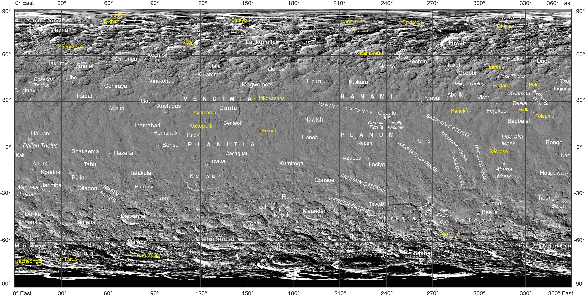
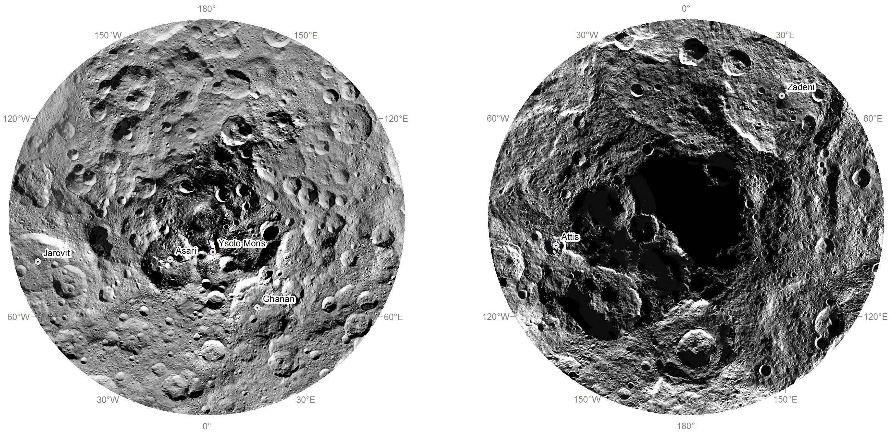
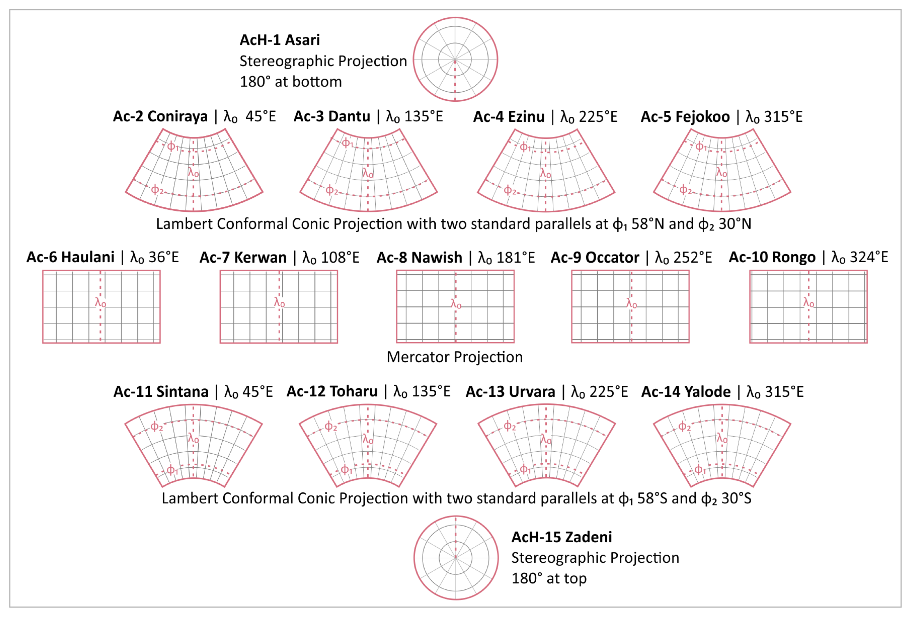
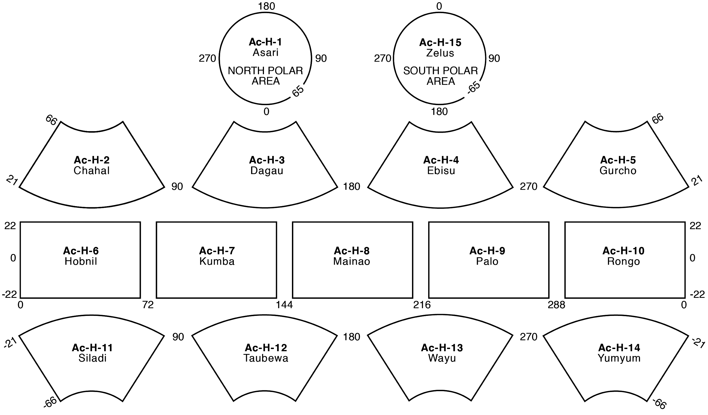
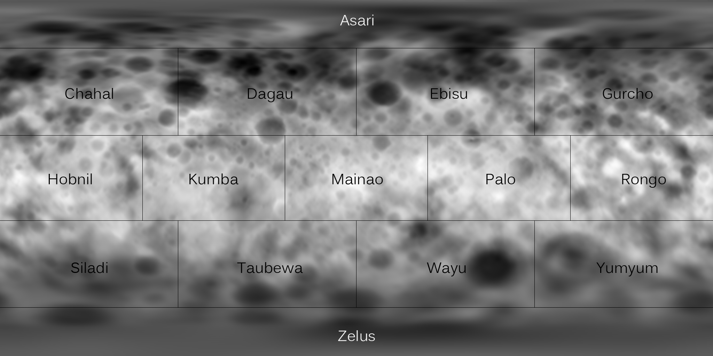
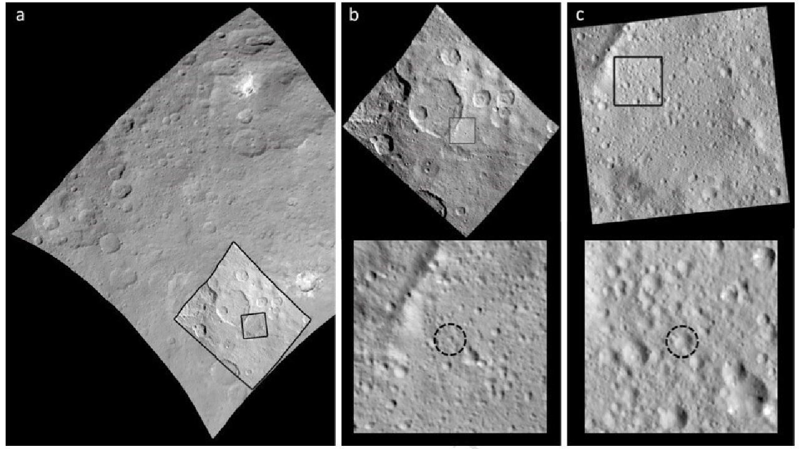
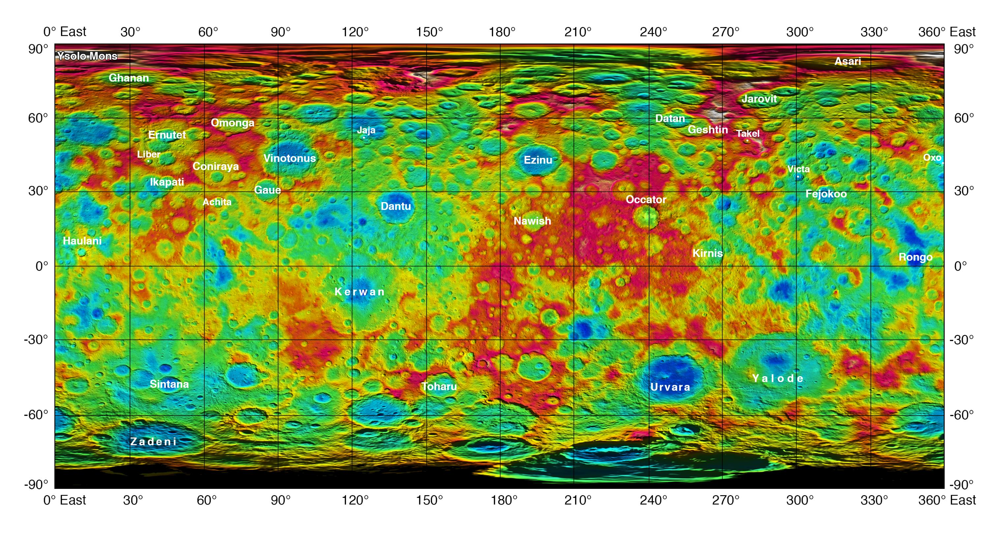
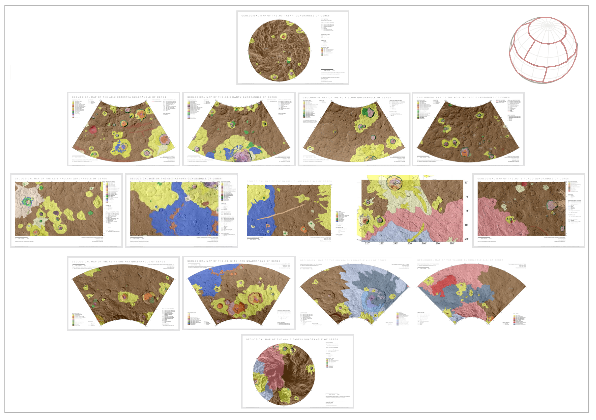
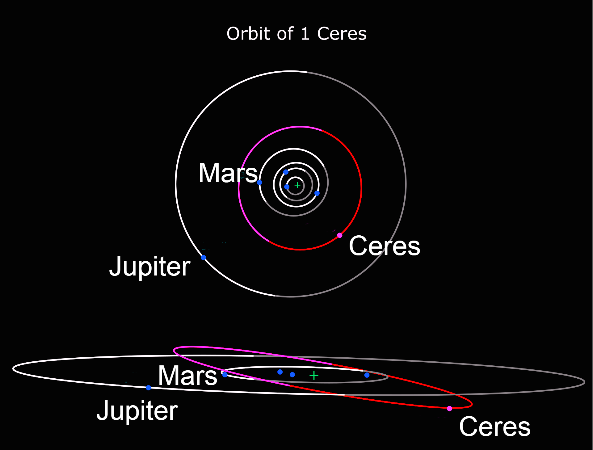

.jpg)
Ceres
Ceres is a dwarf planet in the middle main asteroid belt between the orbits of Mars and Jupiter, the only dwarf planet to be found inside Neptune's orbit.
Ceres is the largest body in the asteroid belt, but is still fairly small. For comparison, even though Ceres comprises 25% of the asteroid belt's total mass, Pluto is still 14 times more massive.
Main resources
Webpages
- NASA's Ceres page: https://science.nasa.gov/dwarf-planets/ceres/
- NASA's Dawn mission page: https://science.nasa.gov/mission/dawn/
- NASA's Dawn mission blog: https://web.archive.org/web/20150611003058/http://dawnblog.jpl.nasa.gov/
- Wikipedia:
- Main Ceres page: https://en.wikipedia.org/wiki/Ceres_(dwarf_planet)
- Geology of Ceres: https://en.wikipedia.org/wiki/Geology_of_Ceres
- NASA's slides about Dawn's discoveries on Ceres: https://sites.nationalacademies.org/cs/groups/ssbsite/documents/webpage/ssb_183286.pdf
- JPL Small-Body Database Browser entry on Ceres: https://web.archive.org/web/20210609120950/https://ssd.jpl.nasa.gov/sbdb.cgi?sstr=ceres
Image galleries
- Images and data from the Dawn mission: https://solarsystem.nasa.gov/missions/dawn/galleries/images (includes pictures of Vesta)
- Images from Dawn on NASA's Photojournal: https://photojournal.jpl.nasa.gov/keywords/dp?subselect=Spacecraft%3ADawn%3ATarget%3ACeres
- Wikimedia: https://commons.wikimedia.org/wiki/Category:Ceres_(dwarf_planet)
Other resources
- 3D model of Ceres: https://eyes.nasa.gov/apps/solar-system/#/1_ceres?amp;logo=false&embed=true
- Ceres Trek: https://trek.nasa.gov/ceres/
Exploration
The only mission that targeted Ceres is the Dawn mission, which reached the dwarf planet in 2015. Little was known about it before due to its size and distance making any sort of telescope-based observation very difficult.
Cartography
Dawn's Map of Ceres
Due to the small size and distance of Ceres, the best maps available come from the data returned by the Dawn mission.

Caption
Often, the names of features on planetary bodies are connected through a specific theme -- for example, many features on the Moon have been named after famous scientists. NASA's Dawn mission, together with the International Astronomical Union, established that craters on Ceres would be named for agricultural deities from all over the world, and other features would be named for agricultural festivals. Ceres itself was named after the Roman goddess of corn and harvests by its discoverer, Giuseppe Piazzi, who spotted it with his telescope in 1801. Since March 2015, Dawn has been orbiting Ceres and sending back many intriguing images and other data about its features. Using suggestions from the Dawn team, the IAU recently approved 25 new Ceres feature names tied to theme of agricultural deities, marked in yellow on the map. Emesh Crater, for example, is named for the Sumerian god of vegetation and agriculture. Jumi is the Latvian god of fertility of the field. The newly named surface features vary in size. Thrud, for example, is a crater with a diameter of 4.8 miles (7.8 kilometers) within the larger crater Zadeni, while Mlezi has a diameter of 28 miles (42 kilometers). For more information, the characteristics of these and other features on Ceres can be found in the IAU's Gazetteer of Planetary Nomenclature. [Source](https://photojournal.jpl.nasa.gov/catalog/PIA21755).
Caption
Researchers from NASA's Dawn mission have composed the first comprehensive views of the north (left) and south pole regions (right) of dwarf planet Ceres, using images obtained by the Dawn spacecraft. The images were taken between Aug. 17 and Oct. 23, 2015, from an altitude of 915 miles (1,470 kilometers). The region around the south pole appears black in this view because this area has been in shade ever since Dawn's arrival on March 6, 2015, and is therefore not visible. At the north polar region, craters Jarovit, Ghanan and Asari are visible, as well as the mountain Ysolo Mons. Near the south pole, craters Attis and Zadeni can be seen. Detailed maps of the polar regions allow researchers to study the craters in this area and compare them to those covering other parts of Ceres. Variations in shape and complexity can point to different surface compositions. In addition, the bottoms of some craters located close to the poles receive no sunlight throughout Ceres' orbit around the sun. Scientists want to investigate whether surface ice can be found there. [Source](https://photojournal.jpl.nasa.gov/catalog/PIA20126).Quadrangles
Based on Dawn's data
The definition of Ceres' quadrangles, prefixed Ac, is also defined in "The geologic mapping of Ceres" [2].
However, another article [3] offers this map, which reports the name of all quadrangles:

Notice how, unlike many other solar system bodies, these quadrangles names are in alphabetical order.
Pre-existing definitions
A different, provisional definition of Ceres quadrangles was made in 2015, before Dawn's mission, based on telescope observations.
Keep in mind that this nomenclature is now completely outdated. I also could not find the publication that proposed this definition.


Prime meridian
Ceres' prime meridian is defined by the tiny equatorial Kait crater (marked on the main map above)[4]. Check the source for a more in-depth discussion about the definition of Cere's prime meridian.

Crater Kait in (a) Survey image FC21A0038023, (b) HAMO image FC21A0042363, and (c) LAMO image FC21A0054621. Crater Kait can now clearly be identified in the center of the black dotted circles. From Roatsch et al. (2017). Source.
Topographic map

Caption
This color-coded map from NASA's Dawn mission shows the highs and lows of topography on the surface of dwarf planet Ceres. It is labeled with names of features approved by the International Astronomical Union. The color scale extends about 5 miles (7.5 kilometers) below the reference surface in indigo to 5 miles (7.5 kilometers) above the reference surface in white. The brightest spots on Ceres, located in Occator crater, retain their bright appearance in this map, although they are color-coded in the same green elevation of the crater floor in which they sit. The one named mountain on Ceres is called Ysolo Mons, and lies high in the northern hemisphere at upper left. The topographic map was constructed from analyzing images from Dawn's framing camera taken from varying sun and viewing angles. The map was combined with an image mosaic of Ceres and rendered as a simple cylindrical projection. Not pictured is Kait crater, which lies on longitude 0. [Source](https://photojournal.jpl.nasa.gov/catalog/?IDNumber=pia19974).Geological map
No complete geological maps of Ceres seems to be freely available at the moment, although they exist. Such map was likely published in [2].
Other articles refer such geological maps. The best accessible images comes from [3], which contains this low-res image.

Interactive maps
NASA Trek
NASA Trek is also available for Ceres, based on the same data: https://trek.nasa.gov/ceres
3D Model
NASA offers an interactive 3D model of Ceres in its Solar System 3D explorer: https://eyes.nasa.gov/apps/solar-system/#/1_ceres
Orbit and rotation
Sources:
Orbital characteristics

Orbits of Ceres (red, inclined) along with Jupiter and the inner planets (white and grey). The upper diagram shows Ceres's orbit from top down. The bottom diagram is a side view showing Ceres's orbital inclination to the ecliptic. Lighter shades indicate above the ecliptic; darker indicate below. Source.
{kind=link}
Ceres orbits between Mars and Jupiter, near the middle of the asteroid belt, with an orbital period (Cererian year) of 4.6 terrestrial years. Compared to other planets and dwarf planets, Ceres's orbit is moderately tilted with its inclination of 10.6° (compare with Earth's 7.155°), and it is also slightly elongated, with an eccentricity of 0.08 (compare with Earth's 0.0167086).
Rotation and axial tilt
The rotation period of Ceres (the Cererian day) is 9 hours and 4 minutes, prograde (east to west).
The north polar axis points at right ascension 19 h 25 m 40.3 s (291.418°), declination +66° 45' 50" (about 1.5 degrees from Delta Draconis), which means an axial tilt of 4°. This means that Ceres currently sees little to no seasonal variation in sunlight by latitude.
Orbital resonances
Due to their small masses and the large distances between them, objects within the asteroid belt rarely fall into gravitational resonances with each other.
However, Ceres is able to capture other asteroids into temporary 1:1 resonances (making them temporary trojans), for periods from a few hundred thousand to more than two million years. Fifty such objects have been identified. Ceres is close to a 1:1 mean-motion orbital resonance with Pallas (their proper orbital periods differ by 0.2%), but not close enough to be significant over astronomical timescales.
Physical characteristics
Ceres is the largest asteroid in the main asteroid belt. It makes up 40% of the estimated (2394±5)×1018 kg mass of the asteroid belt, and it has 3+1⁄2 times the mass of the next asteroid, Vesta, but it is only 1.3% the mass of the Moon.
Albedo
Ceres's surface has an albedo of 0.09, which is quite dark compared to the moons in the outer Solar System. This might be a result of the relatively high temperature of Ceres's surface (estimated to about −38 °C, source): in a vacuum, ice is unstable at this temperature. Material left behind by the sublimation of surface ice could explain the dark surface of Ceres compared to the icy moons of the outer Solar System.
Spectrum
The spectrum of Ceres is similar to that of C-type asteroids. However, since it also has spectral features of carbonates and clay minerals, which are usually absent in the spectra of other C-type asteroids, Ceres is sometimes classified as a G-type asteroid. It has a similar, but not identical, composition to that of carbonaceous chondrite meteorites.
Shape
Ceres is an oblate spheroid, with an equatorial diameter 8% larger than its polar diameter. Measurements from the Dawn spacecraft found a mean diameter of 939.4 km (583.7 mi) and a mass of 9.38×1020 kg. This gives Ceres a density of 2.16 g/cm3, suggesting that a quarter of its mass is water ice.
Ceres is close to being in hydrostatic equilibrium, but some deviations from an equilibrium shape have yet to be explained. Assuming it is in equilibrium, Ceres is the only dwarf planet with an orbital period less than that of Neptune.
Magnetic field
Because Dawn lacked a magnetometer, it is not known if Ceres has a magnetic field; it is believed not to.
Geology
Dawn found Ceres's surface to be a mixture of water ice and hydrated minerals such as carbonates and clay. Gravity data suggest Ceres to be partially differentiated into a muddy (ice-rock) mantle/core and a less dense but stronger crust that is at most thirty percent ice by volume.
Although Ceres likely lacks an internal ocean of liquid water, brines still flow through the outer mantle and reach the surface, allowing cryovolcanoes such as Ahuna Mons to form roughly every fifty million years. This makes Ceres the closest known cryovolcanically active body to the Sun, and the brines provide a potential habitat for microbial life.
Surface composition
The surface composition of Ceres is homogeneous on a global scale, and it is rich in carbonates and ammoniated phyllosilicates that have been altered by water, though water ice in the regolith varies from approximately 10% in polar latitudes to much drier, even ice-free, in the equatorial regions [5].
Studies using the Hubble Space Telescope show graphite, sulfur, and sulfur dioxide on Ceres's surface. The graphite is evidently the result of space weathering on Ceres's older surfaces; the latter two are volatile under Cererian conditions and would be expected to either escape quickly or settle in cold traps, and so are evidently associated with areas with relatively recent geological activity.
Organic compounds were detected in Ernutet Crater, and most of the planet's near surface is rich in carbon, at approximately 20% by mass. The carbon content is more than five times higher than in carbonaceous chondrite meteorites analysed on Earth. The surface carbon shows evidence of being mixed with products of rock-water interactions, such as clays.
This chemistry suggests Ceres formed in a cold environment, perhaps outside the orbit of Jupiter, and that it accreted from ultra-carbon-rich materials in the presence of water, which could provide conditions favourable to organic chemistry.
Craters
Impact craters on Ceres exhibit a wide range of appearances. A large number of Cererian craters have central peaks. By correlating the presence or absence of central peaks with the sizes of the craters, scientists can infer the properties of Ceres’s crust, such as how strong it is. Rather than a peak at the center, some craters contain large pits, depressions that may be a result of gases escaping after the impact [6].
The surface of Ceres has a large number of craters with low relief, indicating that they lie over a relatively soft surface, probably of water ice. Kerwan crater is extremely low relief, with a diameter of 283.88 kilometers, reminiscent of large, flat craters on Tethys and Iapetus. It is distinctly shallow for its size, and lacks a central peak, which may have been destroyed by a 15-kilometer-wide crater at the center. The crater is likely to be old relative to the rest of Ceres's surface, because it is overlapped by nearly every other feature in the area.
Dawn revealed that Ceres has a heavily cratered surface, though with fewer large craters than expected. Models based on the formation of the current asteroid belt had predicted Ceres should have ten to fifteen craters larger than 400 km in diameter. The largest confirmed crater on Ceres, Kerwan Basin, is 284 km across. The most likely reason for this is viscous relaxation of the crust slowly flattening out larger impacts.
Ceres's north polar region shows far more cratering than the equatorial region, with the eastern equatorial region in particular comparatively lightly cratered. The overall size frequency of craters of between twenty and a hundred kilometres is consistent with their having originated in the Late Heavy Bombardment, with craters outside the ancient polar regions likely erased by early cryovolcanism. Three large shallow basins (planitiae) with degraded rims are likely to be eroded craters. The largest, Vendimia Planitia, at 800 km across, is also the largest single geographical feature on Ceres. Two of the three have higher than average ammonium concentrations.
Dawn observed 4,423 boulders larger than 105 m in diameter on the surface of Ceres. These boulders likely formed through impacts, and are found within or near craters, though not all craters contain boulders. Large boulders are more numerous at higher latitudes. Boulders on Ceres are brittle and degrade rapidly due to thermal stress (at dawn and dusk, the surface temperature changes rapidly) and meteoritic impacts. Their maximum age is estimated to be 150 million years, much shorter than the lifetime of boulders on Vesta.
Permanently shadowed craters
Permanently shadowed regions capable of accumulating surface ice were identified in the northern hemisphere of Ceres using images taken by NASA’s Dawn mission combined with sophisticated computer modeling of illumination (7 July 2016). Source.
Ceres' axial tilt is small enough for its polar regions to contain permanently shadowed craters that are expected to act as cold traps and accumulate water ice over time. About 0.14% of water molecules released from the surface are expected to end up in the traps, hopping an average of three times before escaping or being trapped.
Gravitational influence from Jupiter and Saturn over the course of three million years has triggered cyclical shifts in Ceres's axial tilt, ranging from two to twenty degrees, meaning that seasonal variation in sun exposure has occurred in the past, with the last period of seasonal activity estimated at 14,000 years ago. Those craters that remain in shadow during periods of maximum axial tilt are the most likely to retain water ice from eruptions or cometary impacts over the age of the Solar System.
Figures
Name: - MPC designation: 1 Ceres - Pronunciation: /ˈsɪəriːz/, SEER-eez - Adjectives: Cererian, -ean (/sɪˈrɪəriən/) - Symbol: ⚳
Orbital characteristics - Aphelion: 2.98 AU (446 million km) - Perihelion: 2.55 AU (381 million km) - Semi-major axis: 2.77 AU (414 million km) - Eccentricity: 0.0785 - Orbital period (sidereal): 4.60 yr (1680 d) - Orbital period (synodic): 1.28 yr (466.6 d) - Average orbital speed: 17.9 km/s - Mean anomaly: 291.4° - Inclination: - 10.6° to ecliptic - 9.20° to invariable plane - Longitude of ascending node: 80.3° - Time of perihelion: 7 December 2022 - Argument of perihelion: 73.6° - Satellites: None
Proper orbital elements - Proper semi-major axis: 2.77 AU - Proper eccentricity: 0.116 - Proper inclination: 9.65° - Proper mean motion: 78.2 deg / yr - Proper orbital period: 4.60358 yr (1681.458 d) - Precession of perihelion: 54.1 arcsec / yr - Precession of the ascending node: −59.2 arcsec / yr
Physical characteristics - Dimensions: (966.2 × 962.0 × 891.8) ± 0.2 km - Mean diameter: 939.4±0.2 km - Surface area: 2,772,368 km2 - Volume: 434,000,000 km3 - Mass: 9.3839×1020 kg (0.00016 Earths or 0.0128 Moons) - Mean density: 2.1616±0.0025 g/cm3 - Equatorial surface gravity: 0.284 m/s2 (0.029 g) - Moment of inertia factor: 0.36±0.15 (estimate) - Equatorial escape velocity: 0.516 km/s 1141 mph - Sidereal rotation period: 9.074170±0.000001 h - Equatorial rotation velocity: 92.61 m/s - Axial tilt: ≈4° - North pole right ascension: 291.42744° - North pole declination: 66.76033° - Geometric albedo: 0.090±0.0033 (V-band) - Min surface temp.: ≈110K - Max surface temp.: 235±4K - Spectral type: C - Apparent magnitude: 7.6 to 9.3 - Absolute magnitude (H): 3.34 - Angular diameter: 0.854″ to 0.339″
References
[1]: "Dawn at Ceres: What Have we Learned?" https://sites.nationalacademies.org/cs/groups/ssbsite/documents/webpage/ssb_183286.pdf
[2]: "Introduction: The geologic mapping of Ceres" https://doi.org/10.1016/j.icarus.2017.05.004
[3]: “A Cartographic Perspective on the Planetary Geologic Mapping Investigation of Ceres” https://doi.org/10.3390/rs15174209, backup
[4]: "Ceres Coordinate System Description" https://sbnarchive.psi.edu/pds3/dawn/fc/DWNCSPC_4_01/DOCUMENT/CERES_COORD_SYS_180628.HTM
[5]: "Dawn Data Reveal Ceres’ Complex Crustal Evolution" https://meetingorganizer.copernicus.org/EPSC2018/EPSC2018-645-1.pdf
[6]: "Dawn Journal: Ceres' Intriguing Geology" https://www.planetary.org/articles/0630-dawn-journal-ceres-intriguing-geology. The article is not generous on sources though.
[7]: "Cratered Surface of Ceres" https://www.jpl.nasa.gov/images/pia18923-cratered-surface-of-ceres
[8]: "Sublimation in bright spots on (1) Ceres" https://doi.org/10.1038/nature15754
[9]: "Dawn Journal: Ceres' Intriguing Geology" https://www.planetary.org/articles/0630-dawn-journal-ceres-intriguing-geology
[10]: "Ceres takes life an ice volcano at a time" https://phys.org/news/2018-09-ceres-life-ice-volcano.html
[11]: "Cryovolcanic rates on Ceres revealed by topography", Nature Astronomy (2018). DOI: 10.1038/s41550-018-0574-1,